L'Observatoire Astronomique de Rouen a été fondé en 1884 à l'initiative de Ludovic Gully, professeur de mathématique à Rouen. Voici un extrait du journal de Rouen daté du 1er décembre 1884 et relatant cette fondation.


L'Observatoire Astronomique de Rouen a été fondé en 1884 à l'initiative de Ludovic Gully, professeur de mathématique à Rouen. Voici un extrait du journal de Rouen daté du 1er décembre 1884 et relatant cette fondation.
Dès sa création, des observateurs talentueux comme Georges Caron, vice président de l'association qui possédait un observatoire personnel à Lillebonne, fixe sur pellicule des phénomènes célestes exceptionnels comme le passage de "la comète de Halley", "l'éclipse perlée du 17 avril 1912" ou "la comète Morehouse(1908c)".

Voici un article de cette époque conservé dans les archives de l'Observatoire de Harvard aux Etats-Unis:
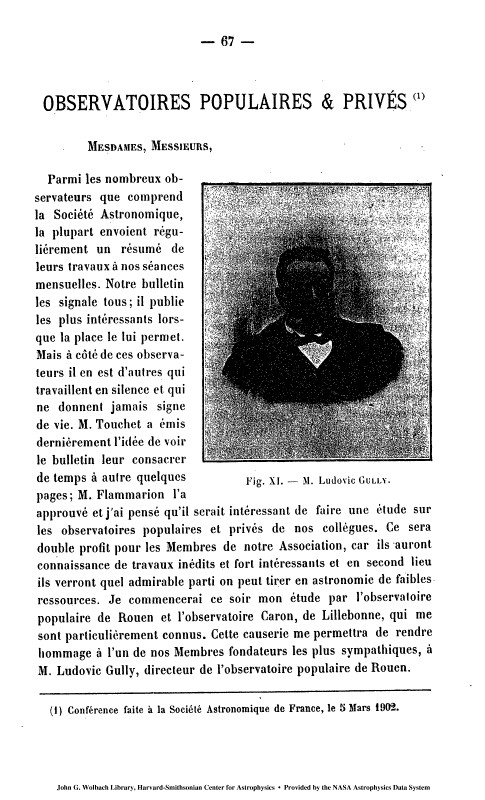 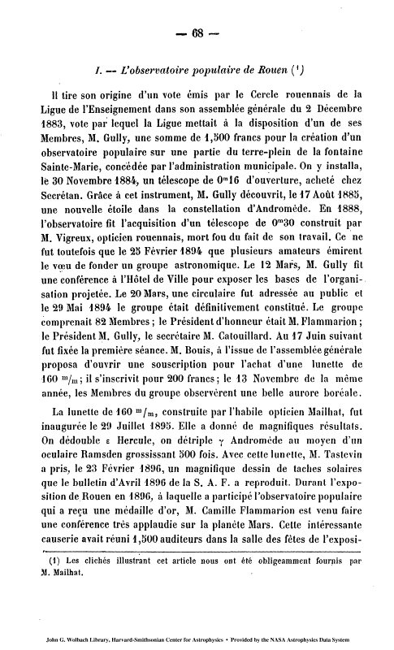 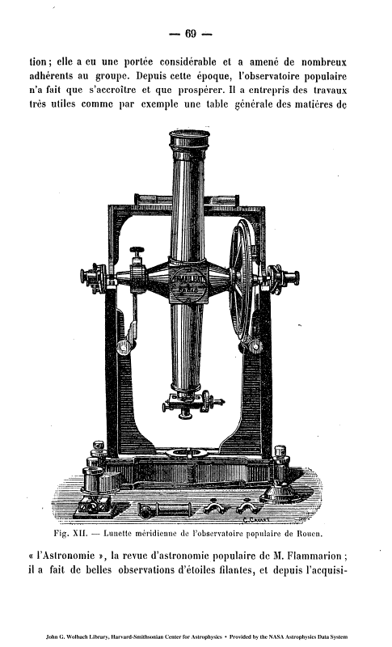 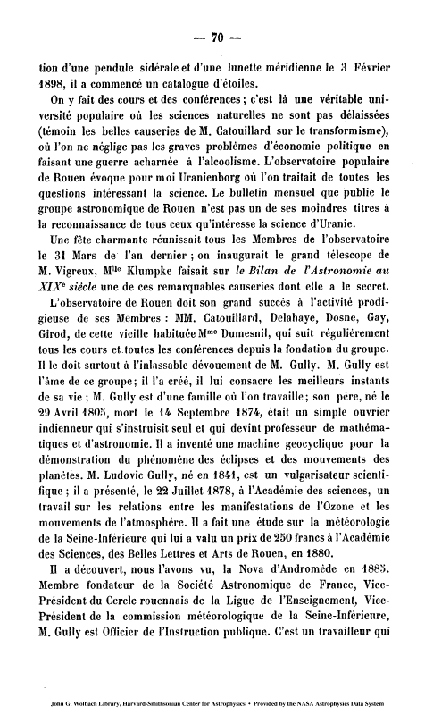 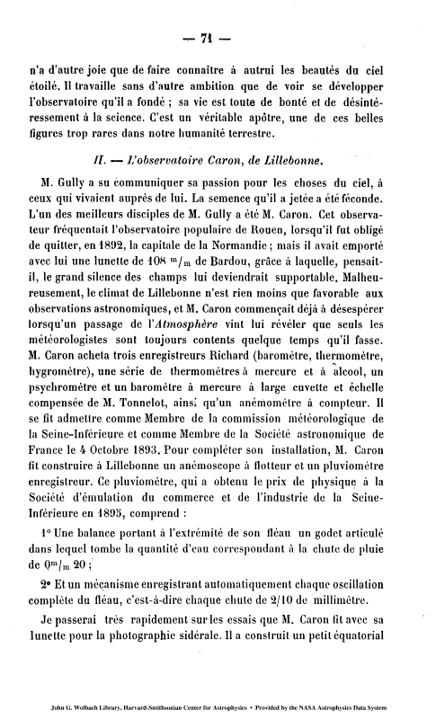
 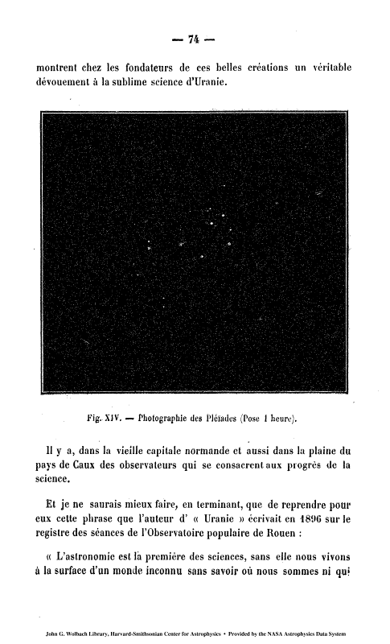
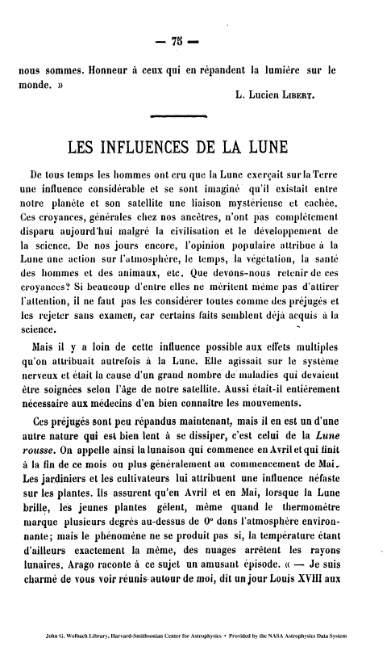
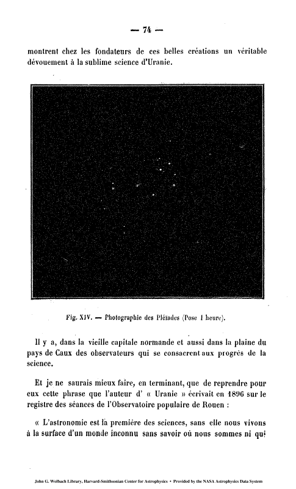
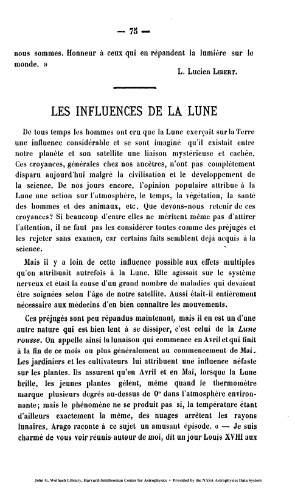
Le membre le plus éminent de l'Observatoire, au moment de sa création, était sans conteste Dorothea Klumpke.

Citoyenne américaine, elle vécut 50 ans en France et fut la première femme à obtenir le titre de Docteur en Astronomie à la Sorbonne. Elle participa à l'élaboration de la carte du ciel et effectua des observations astronomiques en ballon. Elle aida beaucoup l'Observatoire Astronomique de Rouen par son soutien matériel et moral.
Le 17 août 1885, Ludovic Gully découvre la supernova S Andromedae dans la galaxie d'Andromède, grâce à un télescope de 160mm 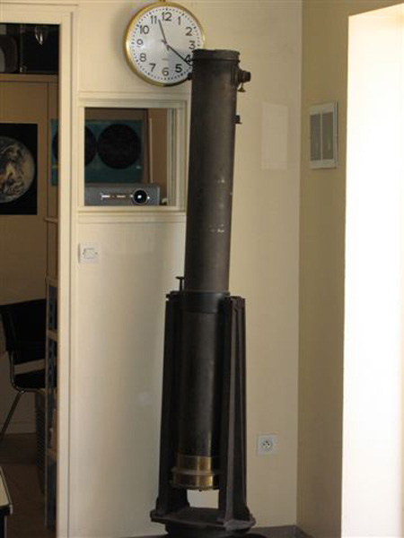 que nous possédons encore.
En 1895, l'Observatoire acquiert notre lunette de 160mm 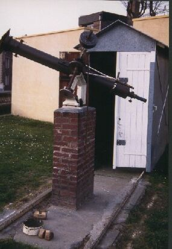 grâce à une souscription publique initiée par un membre actif, M. Bouis.
Le 31 mars 1901, l'Observatoire inaugure, en présence de Dorothée Klumpke, un nouveau télescope de 300 mm de diamètre. D'une taille considérable à l'époque pour un instrument d'amateur, ce télescope demeure pour nous un grand mystère, car aucun résultat photographique ou observationnel ne lui est attribué dans nos archives. On trouve une dernière mention le concernant dans un registre de 1929 qui le décrit comme "inutilisable et démonté"... A-t-il jamais servi un jour?
A la mort du vice président Caron en 1919, l'Observatoire hérite de l'astrographe double de ce dernier : ce sont les lunettes de 110 et 130mm actuellement exposées dans nos locaux.
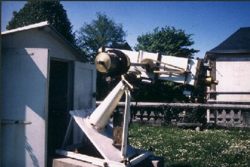Après la disparition en 1905 du fondateur Ludovic Gully, se succèdent à la présidence de l'Observatoire Messieurs: Delehaye 1905-1920, Salvignac 1920-1936, Adrien Métayer 1936-1952, Louis Lemarignier 1952-1955, Jean Lefebvre 1955-1963, Edgard Jouis 1963-1976, André Clastot 1976-1990 et Eric Mandon 1990-...
Les buts premiers de l'association (loi 1901) n'ont pas changé depuis sa création : ce sont la vulgarisation de l'Astronomie et l'étude scientifique des phénomènes célestes.
Moyennant une modeste participation financière, nous recevons le public le premier samedi de chaque mois à partir de 21h30: à cet effet, l'observatoire s'est doté d'un planétarium GOTO EX-3, 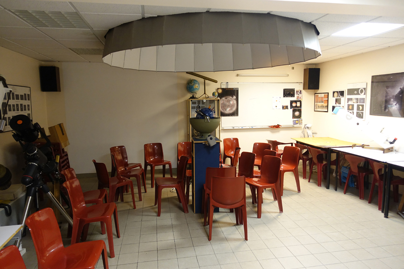 outil pédagogique qui remporte un grand succès. Nous recevons également, avec participation financière, des groupes et classes de tous niveaux. Enfin l'Observatoire ouvre ses portes à l'occasion de phénomènes astronomiques exceptionnels : éclipses, comètes brillantes, nuit des étoiles etc.....
Mais l'on peut également choisir de venir partager sa passion pour l'astronomie en devenant membre de l'Observatoire. Pour cela, il suffit de s'acquitter d'une cotisation annuelle de 35 € (tarif plein) ou 17,5 € (tarif réduit pour les scolaires et les étudiants). L'adhésion donne accès aux séances d'observation à Rouen et à la campagne, à la bibliothèque, à la réception du bulletin et aux différentes activités tous les samedis soir à partir de 21h30.
Outre la lunette de 160 mm de diamètre, nous disposons de plusieurs instruments d'observation dont un télescope de 300mm 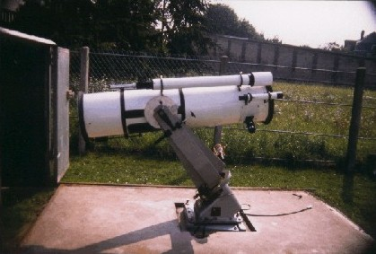 de diamètre et un télescope Meade de 254 mm de diamètre 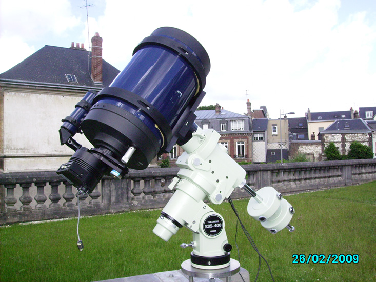 (F/D=6,3) sur une monture Takahashi Temma EM 400 . Ce télescope Meade a été remplacé en 2019 par un télescope Célestron 11 de 280 mm de diamètre (F/D=10). Le C.11est muni d'une caméra Atik 460 EX.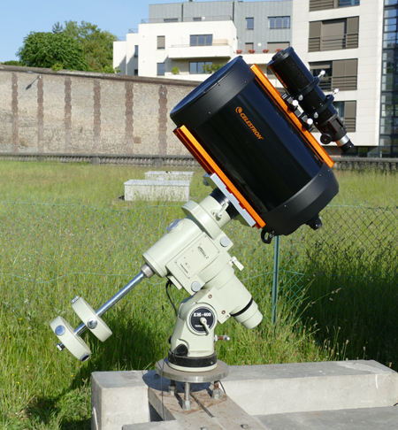
Nous observons et photographions également le ciel profond à la campagne avec un télescope de 260mm 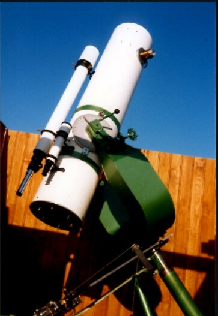 de diamètre.
L'Observatoire de Rouen est également lié à la Société Astronomique de France ( SAF ) puisqu'il est membre, correspondant régional et lauréat de cette société depuis de très nombreuses années. Plusieurs membres de l'Observatoire sont aussi lauréats de la SAF à titre individuel. Valère
Valère Pascal
Pascal Daniel
Daniel Pascal
Pascal